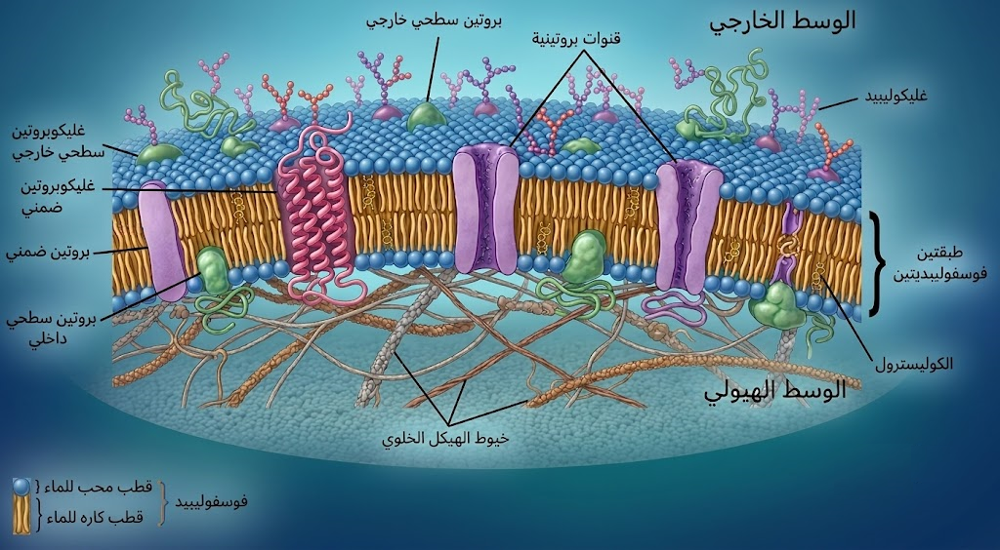
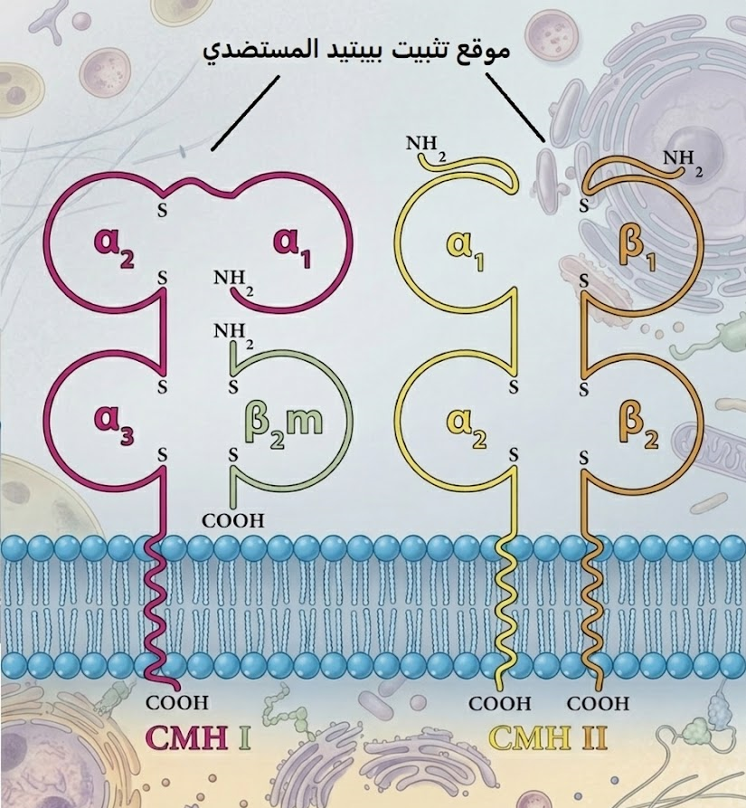
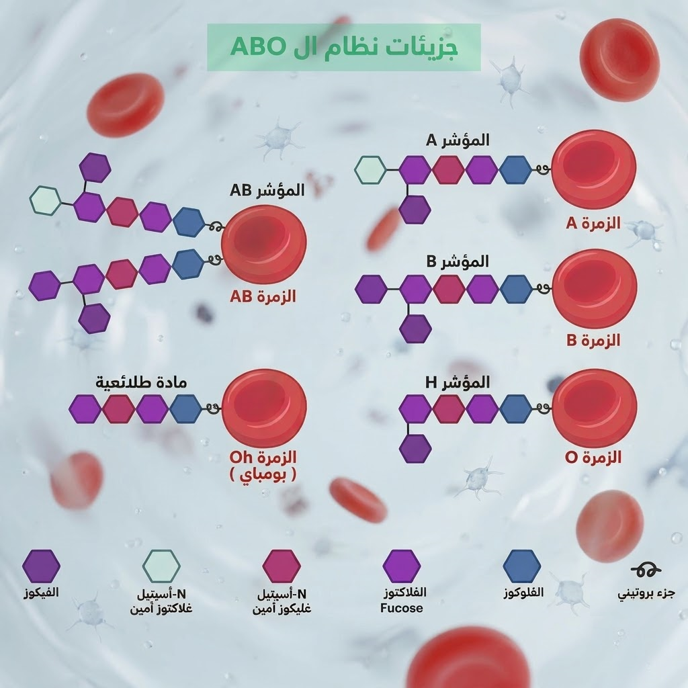
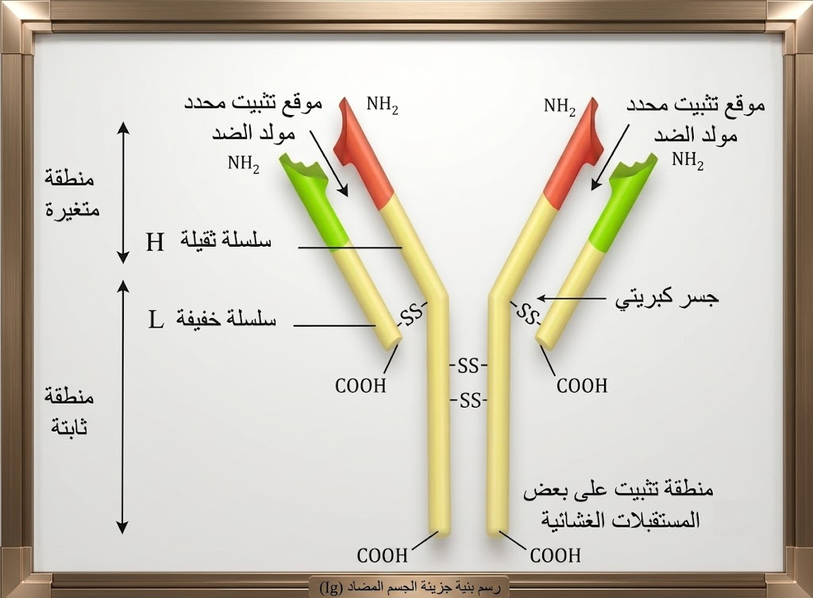

الموسوعة الجزيئية للدفاع عن الذات (النسخة الشاملة الموسعة)
[ مساحة إعلانية علوية ]
1 مفهوم اللاذات والقدرة المستضدية
أ. التمييز بين ببتيدات الذات واللاذات:
تستطيع الخلايا المناعية فحص كل خلية في العضوية عبر مستقبلاتها الغشائية النوعية؛ فإذا عرضت الخلية ببتيدات ناتجة عن التعبير الجيني الطبيعي للعضوية (ببتيدات الذات) يتم تجاهلها واحترامها. أما إذا عرضت الخلية ببتيدات غريبة أو طافرة (ببتيدات اللاذات), فإن الجهاز المناعي يتعرف عليها كعنصر دخيل ومستهدف بالتدمير، وهذا التمييز الصارم هو الحصن الذي يحمي أنسجتنا الحيوية من التحلل والتعرض للتدمير الذاتي.
ب. شروط إثارة الرد المناعي النوعي:
تعتمد العضوية في إثارة الرد المناعي على القدرة المستضدية للمادة الغريبة، والتي تتحدد بمدى تعقد بنيتها الفراغية، وزنها الجزيئي العالي، ومدى غرابيتها واختلافها الوراثي عن بروتينات الجسم الحيوية. الميكروبات المعقدة والسموم تثير استجابة مناعية قوية وفورية، بينما الجزيئات البسيطة جداً أو الصغيرة قد تمر عبر الوسط الداخلي دون إثارة أي رد فعل، ما لم ترتبط كيميائياً ببروتينات ناقلة خاصة داخل العضوية لتكتسب صفتها الغريبة الكاملة.
2 الغشاء الهيولي والبنية الجزيئية
أ. النموذج الفسيفسائي والطبقة الدهنية:
يتكون الغشاء الهيولي من طبقتين من الفوسفوليبيدات تترتب بشكل متقابل بحيث تتوجه أقطابها المحبة للماء نحو الوسطين الخارجي والداخلي، بينما تتقابل الأقطاب الكارهة للماء في المركز، مما يخلق حاجزاً فيزيائياً منيعاً يحمي العضيات الداخلية. تتوزع بين هذه الجزيئات الدهنية بروتينات متباينة الأشكال والأحجام والأوضاع (سطحية، دمجية، وداخلية) تمنح الغشاء مظهراً
فسيفسائياً مميزاً، وتلعب هذه البروتينات دوراً جوهرياً في استقبال الرسائل الكيميائية ونقل المغذيات.
ب. الميوعة الغشائية وديناميكية الجزيئات:
أثبتت تجربة التهجين الخلوي القائمة على وسم بروتينات غشائية لخليتين مختلفتين بأجسام مضادة فلورية أن جزيئات الغشاء الهيولي في حركة ديناميكية مستمرة وغير ساكنة، وهو ما يعرف بخاصية
الميوعة. تسمح هذه السيولة الحركية للبروتينات المستقبِلة بالتحرك والتموضع الفراغي الصحيح والاندماج المرن عند التماس مع الأجسام الغريبة، مما يسهل عمليات التعرف المناعي المباشر والمزدوج وتشكيل المعقدات الوظيفية الضرورية للدفاع.
ج. الغليكوبروتينات وبطاقة التعريف البيولوجية:
تواجد السلاسل السكرية (الغلوسيدية) حصرياً على السطح الخارجي للغشاء الهيولي مرتبطة بالجزيئات البروتينية لتشكل ما يسمى الغليكوبروتينات، وهي المسؤولة المباشرة عن تحديد الهوية البيولوجية للخلية. تعمل هذه الجزيئات المعقدة كبصمة وراثية أو
بطاقة تعريف بيولوجية تسمح للخلايا المناعية بتمييز خلايا الجسم السليمة وحمايتها، وتلعب الدور الحاسم في تحديد قبول أو رفض الطعوم النسيجية المنقولة بين الأفراد.
رسم تخطيطي يوضح بنية الغشاء الهيولي (نموذج الفسيفساء المائعة)

3 نظام معقد التوافق النسيجي (CMH)
أ. التعدد الأليلي والمورثات على الصبغي 6:
تشرف مجموعة مورثات متقاربة جداً ومتعددة ومتموضعة على الذراع القصير للصبغي رقم 6 على تركيب وتعبير جزيئات معقد التوافق النسيجي، وتتميز هذه المورثات بظاهرة
التعدد الأليلي الهائل مع غياب تام للسيادة بين الأليلات المشفرة. هذا التنوع الوراثي اللامتناهي يؤدي إلى إنتاج تركيبات جزيئية فريدة ومستحيلة التكرار بين شخصين في العالم إلا في حالة التوائم الحقيقية المنحدرة من نفس البويضة، مما يضمن تفرداً بيولوجياً ومناعياً مطلقاً لكل إنسان.
ب. بنية وتوزيع الصنفين I و II:
تتميز جزيئات الصنف الأول
CMH I بتواجدها على سطح جميع الخلايا المنواة في الجسم، وتتكون بنيتها الفراغية من سلسلة ببتيدية ثقيلة α مدمجة وسلسلة خفيفة مستقرة β2m، ومهمتها عرض الببتيدات ذات المنشأ الداخلي (كالبروتينات الفيروسية أو السرطانية). بالمقابل، يقتصر تواجد الصنف الثاني
CMH II على الخلايا المناعية العارضة كـ
CPA واللمفاويات
LB، ويتكون من سلسلتين متساويتين تقريباً α و β، ويمتاز بموقع تثبيت فراغي أوسع مخصص لعرض الببتيدات الخارجية التي تم بلعمتها ومعالجتها.
ج. آلية عرض الببتيد المستضدي:
عمل جزيئات الـ CMH بمثابة منصات عرض جزيئية دقيقة، حيث ترتبط ببتيدات المستضد المفككة جزئياً بالموقع الفراغي المحدد للجزيئة أثناء تواجدها في الحويصلات الهيولية، ثم تهاجر المعقدات الناتجة لتستقر على السطح الخارجي للغشاء. إذا كان الببتيد المعروض غريباً وعائداً للاذات، يتم التعرف عليه بشكل مزدوج ونوعي من قبل الخلايا اللمفاوية التائية المتخصصة، مما يحفزها على الدخول في أطوار التكاثر والتمايز لتوليد جيوش مناعية قادرة على تصفية بؤر الإصابة.
رسم تخطيطي يوضح بنية جزيئات الـ CMH

4 مبدأ الرفض والقبول في الطعوم النسيجية
أ. شروط التوافق النسيجي وقبول الطعم:
يتطلب نجاح عملية نقل الطعوم النسيجية بين المعطي والمستقبل تحقيق توافق نسيجي عالي وقريب جداً في جزيئات معقد التوافق النسيجي (CMH) لتفادي صدمة الرفض المناعي الخلوية. هذا التوافق يكون مثالياً ومضموناً بنسبة مئة بالمئة في حالة الطعم الذاتي (من الشخص ونفسه) أو بين التوائم الحقيقية لتماثل مادتهم الوراثية، بينما يتطلب في الحالات الأخرى استخدام أدوية ومثبطات مناعية مدى الحياة لتقليل فوارق الهوية الجزيئية بين الأنسجة.
ب. الآلية الخلوية لرفض الطعوم غير المتوافقة:
عند زرع طعم غير متوافق وراثياً، تتعرف الخلايا اللمفاوية التائية للمستقبل على جزيئات CMH الغريبة المتواجدة على خلايا الطعم كعنصر معادٍ وينتمي للاذات مباشرة. يحفز هذا التعرف المباشر استجابة مناعية ذات وساطة خلوية حادة، حيث تتولد لمات نشطة ومتمايزة من الخلايا التائية القاتلة LTC التي تهاجر إلى نسيج الطعم المستهدف، وتقوم بتدمير خلاياه عن طريق الصدمة الحلولية، مما يؤدي إلى تموته وفشل عملية الزرع.
5 نظام الزمر الدموية ABO
أ. المادة القاعدية H والمنشأ الوراثي (الصبغي 19 و9):
تعتبر المادة H السلسلة السكرية الأساسية والركيزة الجزيئية المشتركة التي ترتبط بغشاء الكريات الدموية الحمراء، وتُصنع بتأثير إنزيمي تشرف عليه مورثة خاصة متموضعة على الصبغي رقم 19. على مستوى الصبغي رقم 9، تتواجد مورثة الزمر الدموية بثلاثة أليلات (A, B, O) والتي تحدد طبيعة السكر النهائي المضاف لهذه المادة القاعدية، في حين يؤدي غياب المادة H نتيجة طفرة نادرة جداً إلى ظهور "زمرة بومباي" التي تفتقر لأي مستضد غشائي طبيعي.
ب. التخصص الإنزيمي للزمر A و B والأليل O:
يشرف الأليل A على تركيب إنزيم وظيفي نوعي يقوم بربط سكر
NAGA بالمادة القاعدية H ليتشكل المستضد A، بينما يشرف الأليل B على إنتاج إنزيم يربط سكر الغالاكتوز
Gal لتتشكل الزمرة B. في المقابل، يمثل الأليل O طفرة تؤدي لإنتاج إنزيم غير وظيفي وعاجز عن إضافة أي سكر، فتبقى المادة H عارية، وهذا التخصص الدقيق في البنية السكرية الطرفية هو الذي يحدد بدقة قواعد التوافق الدموي ويمنع حدوث ارتصاص الكريات.
رسم تخطيطي يوضح البنية الكيميائية لمحددات الزمر الدموية في نظام الـ ABO (الذات واللاذات)

6 نظام الريزوس (Rh) والبروتين D
أ. الطبيعة البروتينية للمستضد D والصبغي 1:
يعتمد نظام الريزوس على وجود أو غياب بروتين غشائي متكامل يسمى المستضد الجزيئي D، وتتحكم في تشفيره وتعبيره السطحي مورثة سائدة متموضعة بدقة على الصبغي رقم 1. إن تواجد هذا المستضد البروتيني يمنح صاحبه الزمرة الموجبة (Rh+)، وبما أنه بروتين خالص معقد البنية، فإنه يمتلك قدرة مستضدية عالية جداً وقادرة على تحفيز رد فعل مناعي قوي عند حقنه في عضوية شخص سالب الريزوس لا يملك هذا البروتين أصلاً في ذاته.
ب. التعارض المناعي بين الأم السلبية والجنين الموجب:
أثناء عملية الولادة الأولى لأم سالبة الريزوس (Rh-) تحمل جنيناً موجب الريزوس (Rh+)، يتسرب جزء من دم الجنين إلى الدورة الدموية للأم، مما يحفز جهازها المناعي على إنتاج أجسام مضادة من نوع IgG ضد المستضد D. في الحمل الثاني بجنين موجب، تعبر هذه الأجسام المضادة الصغيرة المشيمة وتنتقل للجنين مستهدفة كرياته الحمراء بالتدمير الشامل، مما يسبب له فقر دم حاد وقاتل ما لم تحقن الأم بمصل وقائي مضاد لـ D فور الولادة الأولى.
7 نشأة وتمايز الخلايا اللمفاوية ومقر اكتساب الكفاءة
أ. نضج اللمفاويات البائية (LB) في نقي العظام:
تنشأ اللمفاويات البائية من الخلايا الجذعية في نقي العظام الأحمر، وفيه تخضع لعملية نضج واكتساب كفاءة مناعية عبر تركيب مستقبلاتها الغشائية النوعية للأجسام المضادة والمعروفة بالـ BCR. تخضع هذه الخلايا أثناء نضجها لغربلة واختبار صارم للتأكد من عدم مهاجمتها لجزيئات الجسم السليمة، حيث يتم إقصاء أو تفكيك كل خلية تبدي ارتباطاً ببروتينات الذات، لتخرج اللمفاويات الناضجة والكفوءة نحو الأعضاء المحيطية مستعدة للقاء المستضدات.
ب. نضج اللمفاويات التائية (LT) في الغدة التيموسية:
تهاجر الخلايا الطلائعية التائية غير الناضجة من نقي العظام متوجهة نحو الغدة التيموسية (الدردبية) لتخضع هناك لعمليات نضج معقدة يتم خلالها تركيب مستقبلاتها الغشائية التائية TCR ومؤشراتها النوعية. تتمايز الخلايا التي تركب المؤشر CD4 إلى لمفاويات LT4 المستهدِفة للـ CMH II، بينما تتمايز الخلايا التي تركب المؤشر CD8 إلى لمفاويات LT8 المستهدِفة للـ CMH I، مما يمنحها كفاءة وظيفية عالية وتخصصاً صارماً.
8 آلية التسامح المناعي وحفظ سلامة العضوية
أ. التسامح المناعي المركزي وإقصاء النسائل المخربة:
يحدث التسامح المناعي المركزي في الأعضاء اللمفاوية المركزية (نقي العظام والغدة التيموسية) أثناء مراحل نضج اللمفاويات، حيث تُعرض بروتينات ومكونات الذات على الخلايا اللمفاوية الفتية لاختبار تخصصها. النسائل التي تمتلك مستقبلات تتكامل وتتفاعل بقوة مع جزيئات الذات تُعتبر خلايا مخربة وخطيرة، ويتم التخلص منها فوراً عبر تحفيزها على الانتحار الخلوي المبرمج، مما يضمن خروج خلايا كفوءة تحترم وحدة ومكونات الجسم السليمة فقط.
ب. التسامح المناعي المحيطي ودور الخلايا التائية المنظمة (LTreg):
في حال نجاح بعض النسائل اللمفاوية الحاملة لخطورة مهاجمة الذات في الإفلات والوصول للأعضاء المحيطية، تتدخل آليات التسامح المحيطي لكبحها عبر نسائل خلوية متخصصة تُعرف بالخلايا التائية المنظمة LTreg. تفرز هذه الخلايا وسائط كيميائية مثبطة وسيتوكينات خاصة تعمل على شل نشاط الخلايا المناعية المارقة ومنعها من التكاثر أو إحداث استجابة ضد أنسجة العضوية، مما يشكل خط دفاع ثانٍ لحماية الذات من الالتهابات الذاتية.
9 دور الخلايا العارضة (CPA)
أ. المعالجة الجزيئية وعرض الببتيدات على الـ CMH:
تقوم الخلايا العارضة للمستضد مثل البالعات الكبيرة بإدخال العناصر الغريبة عبر آلية البلعمة، ليتم هضمها جزئياً وتفكيك بروتينات المعقدة داخل الحويصلات الهيولية بواسطة إنزيمات ليزوزومية قاطعة. ترتبط محددات المستضد الناتجة (الببتيدات المستضدية) بجزيئات الـ CMH II المصنعة حديثاً، ثم تهاجر هذه الحويصلات نحو الغشاء الهيولي لتندمج معه، مما يسمح بعرض المعقد المستضدي بوضوح على السطح الخارجي أمام اللمفاويات التائية.
ب. إفراز الإنترلوكين 1 والتنشيط الأولي للمفاويات:
بالتزامن مع عملية العرض الجزيئي وتشكيل التماس المباشر، تفرز خلايا CPA وسيطاً كيميائياً غير نوعي يعرف بالإنترلوكين 1 (IL-1) الموجه نحو اللمفاويات LT4 و LT8 القريبة والمقتربة. يعمل هذا السيتوكين كمحفز خلوي أولي يحث اللمفاويات المنتخبة على مغادرة حالة الخمول، والبدء الفوري في التعبير الجيني لتركيب مستقبلات الإنترلوكين 2 (IL-2R)، وهي الخطوة التمهيدية الإلزامية لدخول مرحلة التنشيط والتكاثر.
10 بنية ووظيفة الغدد اللمفاوية والأعضاء المحيطية
أ. البنية التشريحية للغدة اللمفاوية ومناطق التمركز:
تتميز الغدد اللمفاوية ببنية تشريحية شديدة التنظيم والتعقيد مقسمة إلى مناطق وظيفية واضحة محاطة بمحفظة ليفية، وتضم منطقة القشرة الخارجية الغنية بنسيج لمفاوي بائي (LB) يتجمع في شكل جريبات مناعية. تليها المنطقة شبه القشرية التي تتمركز فيها أساساً اللمفاويات التائية (LT4 و LT8)، ثم منطقة اللب الداخلي التي تحتوي على جبال وعناصر خلوية بالعة وأوعية صادر ووارد، مما يسمح بفلترة وتصفية اللمف بفعالية عالية.
ب. الغدة كمسرح للقاء المناعي والانتقاء النسيلي:
تعتبر الغدد والأعضاء اللمفاوية المحيطية بمثابة المسرح الحيوي الحقيقي والوحيد الذي تلتقي فيه العناصر الغريبة الوافدة مع الخلايا المناعية المتخصصة والدوارة. عند دخول المستضد المحمول باللمف أو العارض، يحدث الانتقاء النسيلي حيث تختار محددات المستضد بدقة النسائل اللمفاوية التي تمتلك مستقبلات متكاملة معها فراغياً، مما يحول الغدة إلى مركز عمليات حيوي يتضخم حجمه نتيجة الانقسامات الخلوية النشطة.
11 مراحل وآلية الاستجابة المناعية الخلطية (LB)
أ. مرحلة الانتقاء والتحسيس:
تتحسس اللمفاويات البائية مباشرة عند ارتباط مستقبلاتها الغشائية BCR بمحددات المستضد المنحل في السوائل الحيوية دون الحاجة لوسيط يعرضها، مما يضمن انتقاء لمة محددة ونوعية متكاملة بنيوياً. بالتزامن مع هذا الارتباط وتأثير الإنترلوكين 1 المفرز من طرف CPA، تصبح خلايا الـ LB منتقاة ومحسسة، وتبدأ فوراً في إظهار مستقبلات الـ IL-2 على غشائها استعداداً لتلقي أوامر الدعم الخلوي.
ب. مرحلة التكاثر (التوسع النسيلي):
بمجرد استقبال الخلايا البائية المحسسة لإشارات الإنترلوكين 2 (IL-2) المفرز من الخلايا التائية المساعدة النشطة، تنفتح شفرات الانقسامات الخيطية المتتالية والسريعة للخلية. تؤدي هذه الانقسامات الكثيفة إلى تضخيم عدد أفراد اللمة المنتخبة بشكل هائل وتوليد جيش خلوي يحمل نفس المستقبل الغشائي والنوعية الصارمة ضد المستضد، وهو ما يطلق عليه في المنهجية اسم التوسع النسيلي.
ج. مرحلة التمايز:
تخضع أغلب الخلايا اللمفاوية الناتجة عن التوسع النسيلي لتغيرات بنيوية وعضوانية عميقة تؤدي لتمايزها إلى خلايا بلازمية (Plasmocytes) تتميز بتضخم حجمها، وتطور شبكتها الهيولية الداخلية وجهاز غولجي لإنتاج البروتينات بكثافة. في حين تتمايز النسبة المتبقية الصغرى إلى خلايا بائية ذات ذاكرة مناعية (LBm) طويلة المدى، وتتميز ببطء نشاطها الاستقلابي وبقائها ساهرة في المحيط لسنوات ترقباً لأي هجوم مستقبلي.
د. مرحلة التنفيذ:
تبدأ الخلايا البلازمية المتمايزة في ضخ وإفراز الآلاف من الأجسام المضادة الحرة والنوعية في الدم واللمف والخلال الحيوية للعضوية بمعدل زمني هائل. تنتقل هذه الجزيئات الدفاعية السارية عبر السوائل تصل إلى مواقع انتشار وتمركز المستضدات الغريبة، وتقوم بمهاجمتها والارتباط الحصري بمحدداتها لتشكيل معقدات مناعية تبطل مفعولها وتمنع تمدد خطرها في الأنسجة السليمة.
12 بنية الجسم المضاد (Ig)
أ. السلاسل الببتيدية والجسور الكبريتية وشكل حرف Y:
تتميز البنية الفراغية للجسم المضاد (
Immunglobuline) بشكلها النموذجي الشبيه بحرف
Y، وتتكون بدقة من أربع سلاسل ببتيدية متناظرة: سلسلتين ثقيلتين
H والسلسلتين خفيفتين
L. ترتبط هذه السلاسل الأربع بروابط وتكافؤات كيميائية قوية تتمثل في الجسور ثنائية الكبريت (
S-S) التي تضمن الاستقرار المتين للبنية الفراغية للجزيء، وتسمح له بمقاومة التغيرات الفيزيائية والكيميائية في الوسط الداخلي.
ب. تخصص المواقع المتغيرة (Fab) والتكامل البنيوي:
تحتوي النهايات الطرفية الحرة للسلاسل الببتيدية (الخفيفة والثقيلة معاً) على مناطق تتميز بتسلسل متغير من الأحماض الأمينية، وتشكل ما يعرف بموقعي تثبيت المستضد (
Fab). هذا التغير المتنوع يمنح الموقع بنية فراغية فريدة ومتكاملة هندسياً مع محدد مستضدي محدد وخاص، مما يسمح للجسم المضاد بالارتباط الصارم والنوعي بجزئية الهدف دون غيرها بكفاءة تشبه القفل والمفتاح.
ج. دور الجزء الثابت (Fc) في الارتباط بالبالعات:
يمثل الجذع السفلي المشترك للسلسلتين الثقيلتين المنطقة الثابتة للجسم المضاد والمعروفة بالجزء
Fc، وهي متماثلة البنية عند جميع الأجسام المضادة التي تنتمي لنفس الصنف الجزيئي. تلعب هذه المنطقة دوراً تنفيذياً هاماً، حيث تمتلك موقعاً مخصصاً للارتباط بالمستقبلات الغشائية المتواجدة على أسطح الخلايا البالعة الكبيرة، مما يجعل الجسم المضاد بمثابة جسر رابط يسهل ويسرع تصفية المستضد.
رسم بنية جزيئة الجسم المضاد (Ig)

13 آلية إبطال مفعول المستضد
أ. تشكل المعقد المناعي وشلل حركة المقذوفات الميكروبية:
ينتج عن الارتباط النوعي والمزدوج بين المواقع المتغيرة للجسم المضاد ومحددات غشاء المستضد تشكل بنية جزيئية متكاملة تدعى المعقد المناعي. يؤدي هذا الحصار الغشائي الفوري إلى شلل تام في حركة الميكروبات والمقذوفات الفيروسية، ويمنعها من الالتصاق بأغشية الخلايا السليمة أو اختراقها لتمرير مادتها الوراثية، مما يحولها من عناصر غازية نشطة إلى أهداف معزولة وسهلة التصفية.
ب. ظواهر الارتصاص والترسيب:
في حالة ما إذا كان المستضد الغريب خلوياً أو جسيماً كبيراً (كالرواشح والبكتيريا)، يؤدي ارتباط الأجسام المضادة متعددة المواقع بها إلى تجمعها في كتل شبكية ضخمة تدعى ظاهرة الارتصاص. أما إذا كان المستضد عبارة عن جزيئات ذائبة أو سموم خلوية (Toxines)، فإن الارتباط يحولها إلى معقدات كيميائية غير ذائبة ومترسبة تدعى ظاهرة الترسيب, وفي كلتا الحالتين يتم إبطال المفعول السام وحماية الأنسجة.
14 مراحل وعناصر عملية البلعمة والتخلص من المعقدات
أ. مرحلة التثبيت والالتصاق:
تبدأ أولى مراحل التخلص من المعقدات المناعية بمرحلة التثبيت والالتصاق، حيث تقترب الخلية البالعة الكبيرة من المعقد المناعي المتشكل في الوسط الخلالي. ترتبط البالعة بقوة بالمعقد عن طريق تكامل فراغي مباشر بين مستقبلاتها الغشائية النوعية والجزء الثابت (Fc) للأجسام المضادة الحاصرة للمستضد، مما يضمن تثبيتاً ميكانيكياً محكماً للمعقد على سطح غشائها الهيولي الخارجي.
ب. مرحلة الإحاطة والابتلاع:
فور حدوث التثبيت المحكم، يستجيب الغشاء الهيولي للخلية البالعة عبر إرسال امتدادات سيتوبلازمية مرنة وديناميكية تُعرف باسم الأرجل الكاذبة التي تحيط بالمعقد المناعي من جميع أطرافه. تلتحم نهايات هذه الأرجل الكاذبة تنغلق على المعقد وتدخله بالكامل إلى داخل الهيولى محاطاً بغشاء خلوي، متشكلة بذلك فجوة ابتلاعية معزولة تُسمى الحويصل البالع.
ج. مرحلة الهضم الإنزيمي:
تحتوي الحويصلات الليزوزومية (Lysosomes) الغنية بالإنزيمات الهاضمة والقاطعة (مثل البروتياز والتحلل المائي) نحو الحويصل البالع وتندمج معه لتشكل حويصلاً هاضماً مشتركاً. يتم تفريغ الشحنات الإنزيمية الحامضية مباشرة فوق المعقد المناعي، مما يؤدي لتفكيك الروابط الببتيدية والسكرية للمستضد والأجسام المضادة وتحويلها بالكامل إلى جزيئات بسيطة خالية من أي خطورة بيولوجية.
د. مرحلة الإطراح الخلوي:
بعد انتهاء عمليات التفكيك الكيميائي الشامل للمعقد المناعي، يتحرك الحويصل الهاضوم المحمل بققايا الهضم والفضلات غير القابلة للاستيعاب متوجهاً نحو المحيط الغشائي للبالعة. يندمج غشاء الحويصل مع الغشاء الهيولي الخارجي للخلية في عملية قذف خلوي عكسية، مما يؤدي لطرح الفضلات خارج الخلية في الوسط الخارجي، وتطهير الوسط الداخلي للعضوية بصفة نهائية.
15 مراحل وآلية الاستجابة المناعية الخلوية (LTC)
أ. مرحلة الانتقاء والتحسيس:
تعتمد الاستجابة الخلوية في انطلاقها على حدوث التعرف المزدوج الصارم بواسطة مستقبلات اللمفاويات التائية LT8 الكفوءة. يرتبط مستقبل الـ TCR وجزيئة CD8 بالمعقد المكون من جزيئة CMH I والببتيد المستضدي المعروض على غشاء الخلية المصابة (فيروسياً أو سرطانياً). هذا التعرف المزدوج المدعم بـ IL-1 يحسس اللمفاوية LT8 وينتخبها، محفزاً إياها لتركيب مستقبلات الـ IL-2 للبدء في تلقي الدعم.
ب. مرحلة التوسع والتمايز:
تستقبل الخلايا التائية LT8 المنتقاة والمحسسة جزيئات الإنترلوكين 2 المفرزة من طرف الخلايا المساعدة، فتدخل في موجات انقسام خيطي متتالي لتوسيع نسيلي هائل لعدد الخلايا. تتمايز أغلبية الخلايا الناتجة إلى خلايا تائية قاتلة منفذة (LTC) تتميز بهيولى غنية بالحويصلات الإفرازية السامة، بينما تتمايز القلة الباقية إلى خلايا تائية ذات ذاكرة خلية مخزنة (LT8m) لضمان الاستجابة السريعة مستقبلاً.
ج. مرحلة الهجوم الإفرازي:
تهاجر الخلايا القاتلة LTC وتلتصق نوعياً بالخلايا المصابة الحاملة لنفس الببتيد المستضدي، ثم تقوم بطرح محتويات حويصلاتها الإفرازية في شق التماس بتوجيه دقيق. تفرز جزيئات بروتين البرفورين التي تترمرم وتتجمع في غشاء الخلية المصابة صانعة قنوات وثقوباً بنيوية واسعة، يمر عبرها إنزيم الغرونزيم المحلل متوجهاً مباشرة نحو العمق الهيولي والنووي للخلية المستهدفة.
د. مرحلة التحلل الحلولي:
يتسبب دخول الماء والأملاح المعدنية بكميات كافية وعبر قنوات البرفورين في إحداث صدمة حلولية حادة تؤدي لانتفاخ وتفجر الخلية المصابة تدريجياً. بالتزامن مع ذلك، يقوم إنزيم الغرونزيم بتنشيط آليات انتحار الخلية وتفكيك وتخريب الـ DNA الخاص بها وبعوامل العدوى داخلها، مما يؤدي لتمزق وتلاشي الخلية المصابة بالكامل وتحولها لأشلاء تقوم البالعات بابتلاعها.
16 التعاون المناعي والإنترلوكين 2
أ. دور الخلايا LTh كقائد وموجه مركزي للمناعة:
تمثل الخلايا التائية المساعدة (LTh) الناتجة عن تمايز اللمفاويات LT4 الدماغ المدبر والقائد الأعلى للمنظومة المناعية المشتركة دون استثناء. بعد تعرفها المزدوج على المعقد (ببتيد مستضدي - CMH II) المعروض من طرف CPA، تقوم بتنشيط نفسها ذاتياً عبر إفراز واكتساب الإنترلوكين 2، مما يحولها إلى خلايا مفرزة بغزارة للسيتوكينات والوسائط التي توجه وتحدد طبيعة الرد المناعي الفعال والمناسب لحجم التهديد.
ب. تنسيق الهجوم المشترك عبر الـ IL-2:
انتشار الإنترلوكين 2 (IL-2) المفرز من خلايا LTh في الوسط الخلالي ليرتبط بمستقبلاته النوعية المتواجدة على أسطح اللمفاويات LB و LT8 التي تم انتقاؤها وتحسيسها مسبقاً. يعمل هذا الارتباط كمفتاح جزيئي وحيد يأمر هذه الخلايا بالانقسام السريع والتمايز إلى خلايا بلازمية مفرزة وأخرى قاتلة LTC، مما يثبت أن التنسيق الكيميائي المعتمد على سلامة الـ LT4 هو الضامن لشن هجوم مزدوج وخلطي وخلوي متكامل.
17 تأثير الهرمونات والمستقبلات على النشاط المناعي
أ. هرمون الكورتيزول وتثبيط الالتهاب الدفاعي عند التوتر:
تفرز قشرة الغدة الكظرية هرمون الكورتيزول بكميات عالية عند تعرض العضوية لحالات التوتر الحاد أو الضغوطات النفسية والفيزيولوجية المستمرة والمطولة. ينتقل الكورتيزول عبر الدم ليرتبط بمستقبلات نووية داخل الخلايا المناعية، مما يؤدي لتثبيط التعبير الجيني الخاص بتركيب السيتوكينات المنشطة (مثل الإنترلوكينات)، وهذا الكبح الكيميائي يضعف آليات الالتهاب الدفاعي ويجعل الجسم عرضة للاختراقات الميكروبية.
ب. التنسيق العصبي الصماوي المناعي ومفهوم التوازن العام:
يعمل الجهاز المناعي بتنسيق وتكامل وثيق مع الجهازين العصبي والغددي الصماوي في شبكة تنظيمية معقدة تضمن الحفاظ على التوازن البيولوجي العام للعضوية. ترسل المشابك العصبية والناقلات رسائل تؤثر في نشاط الغدد والأعضاء اللمفاوية، وبالمقابل تؤثر الإنترلوكينات المناعية على المراكز العصبية في الوطاء، وهذا التداخل الجزيئي يثبت أن استقرار العضوية وحمايتها ناتج عن توازن هرموني وعصبي ومناعي مشترك ومستمر.
18 الاستجابة المناعية الأولية والثانوية
أ. خصائص الاستجابة الأولية:
تحدث الاستجابة المناعية الأولية عند التماس الأول والحصري للجهاز المناعي مع مستضد غريب، وتتميز بوجود زمن كامن طويل (يتراوح من عدة أيام لأسبوعين) تحتاجه الخلايا للتعرف والانتقاء والتكاثر. تكون كمية الأجسام المضادة المفرزة في الدم واللمف قليلة نسبياً وتتناقص بسرعة في الوسط الداخلي، ويسود في هذا الرد الضعيف والمؤقت الأجسام المضادة من نوع IgM كدفاع أولي محدود القوة والمدى.
ب. الاستجابة الثانوية والذاكرة المناعية:
تنطلق الاستجابة الثانوية فور حدوث تماس ثانٍ أو متكرر مع نفس المستضد الغريب، وتتميز بالسرعة الفائقة والشدة العالية جداً نظراً لتدخل خلايا الذاكرة (LBm و LTm) الجاهزة والمدربة وذات العدد الكبير. يتم إنتاج وتدفق كميات هائلة ومكثفة من الأجسام المضادة المتخصصة ويسود فيها النوع IgG وتدوم فترات بقائها في السوائل لسنوات، مما يؤدي للقضاء التام على الميكروب قبل ظهور أي أعراض سريرية للمرض.
19 التلقيح والاستمصال (المصل واللقاح)
أ. التلقيح وبناء الحصانة النشطة طويلة المدى:
يعتمد التلقيح (Vaccination) على إدخال مستضدات وهنة أو ميتة أو أجزاء من أغشيتها (أناتوكشين) غير ممرضة إلى داخل العضوية بهدف تحفيزها بصورة آمنة. يدفع هذا الحقن الجهاز المناعي لتشكيل استجابة أولية بطيئة تكلل بتوليد خلايا ذاكرة مناعية نوعية تدوم لسنوات طويلة، مما يمنح الجسم حصانة نشطة ومستعدة للقضاء الفوري على الميكروب الحقيقي والشرس في حال دخوله مستقبلاً كفعل وقائي.
ب. الاستمصال للعلاج الفوري المؤقت بنقل الأجسام المضادة:
يمثل الاستمصال (Sérothérapie) عملية حقن مصل علاجي يحتوي على كميات مكثفة وجاهزة من الأجسام المضادة النوعية المستخلصة من حيوانات أو أفراد ممنعين سابقاً. يوفر هذا الإجراء حماية مناعية فورية وسريعة جداً في الحالات الاستعجالية والطارئة التي تهدد الحياة (مثل لدغ العقارب أو الإصابة بالكزاز)، لكن مفعوله مؤقت يزول بزوال الأجسام المضادة، ولا يترك وراءه أي خلايا ذاكرة مناعية.
20 المخطط التحصيلي الشامل لآليات الرد المناعي
أ. التكامل الوظيفي والدوراني بين المسلكين:
لا تعمل آليات الرد المناعي في مسارات معزولة أو منفصلة، بل يجمعهما تكامل وظيفي ودوراني محكم وشامل لتأمين كافة أوساط الجسم. في الوقت الذي تتكفل فيه الأجسام المضادة في المسلك الخلطي بمحاصرة وشلل حركة المستضدات والسموم الحرة المنتشرة في السوائل، تقوم الخلايا LTC في المسلك الخلوي بتتبع وتصفية الخلايا التي نجحت الميكروبات في التسلل لعمقها، مما يضمن حصاراً شاملاً ومطبقاً للعدوى.
ب. المحور المركزي للتنشيط المعتمد على سلامة الـ LT4:
تؤكد الدراسات السريرية والمناعية أن سلامة وبقاء الخلايا اللمفاوية LT4 هو حجر الزاوية والمحور المركزي الأوحد الذي يرتكز عليه بناء وتنشيط الاستجابات المناعية النوعية. غياب أو استهداف هذه الخلايا يؤدي مباشرة إلى غياب الوسيط الكيميائي المشترك IL-2، مما يسبب شللاً تاماً وعجزاً كاملاً في قدرة الخلايا البائية والتائية الثامنة على التكاثر والتمايز، فتصبح العضوية عاجزة عن الدفاع كلياً.
ج. الغاية من التمييز بين الذات واللاذات في حفظ وحدة الجسم:
تتمثل الغاية الأسمى والنهائية لكافة المعقدات والتفاعلات المناعية الجزيئية في الحفاظ الصارم على وحدة وبنية الذات وإقصاء وتدمير كل ما هو غريب أو يطرأ عليه تغيير. يعتمد هذا التوازن الجزيئي الدقيق على قراءة وفحص جزيئات الـ CMH وهويتها النسيجية، مما يسمح لأنسجة العضوية بالنمو والعيش في استقرار بيولوجي منسجم، والقدرة المرنة على التكيف ومجابهة التهديدات البيئية المختلفة.
21 بنية فيروس نقص المناعة البشري (HIV)
أ. بروتين gp120 واستهداف مؤشرات الـ CD4 غشائياً:
يتميز فيروس نقص المناعة البشري (HIV) بغلاف دهني خارجي مرصع ببروتينات سكرية بارزة تسمى جزيئات gp120 ذات البنية الفراغية المحددة بدقة. تمتلك هذه الجزيئات تكاملاً فراغياً صارماً وموجهاً للارتباط الحصري بمؤشرات الـ CD4 الغشائية المتواجدة بكثرة على أسطح الخلايا التائية المساعدة والبالعات، مما يسمح للفيروس باختيار ضحاياه واختراق خطوط الدفاع الرئيسية للجسم.
ب. إنزيم الاستنساخ العكسي والدمج الجيني داخل النواة:
يصنف الفيروس ضمن الفيروسات الرجعية لامتلاكه مادة وراثية من نوع ARN مدعومة بإنزيم نوعي يدعى الاستنساخ العكسي الكفيل بتحويل المادة الفيروسية إلى شريط DNA فور دخوله الخلية. ينتقل هذا الـ DNA الفيروسي الجديد عبر الهيولى ليلج النواة، ويندمج كيميائياً وبشكل نهائي ضمن صبغيات الخلية البشرية المستضيفة، مما يجعلها مجبرة على التعبير عنه واستنساخه كأنه جزء من مادتها الوراثية السليمة.
22 دورة حياة HIV وآلية استنزاف الدفاعات
أ. التبرعم الفيروسي الكثيف وموت الخلايا المصابة LTh:
بعد سيطرة الـ DNA الفيروسي المدمج على آليات التركيب الحيوي للخلية LT4، يتم إنتاج بروتينات الفيروس وتجميع آلاف الجسيمات الفيروسية الجديدة داخل الهيولى. تخرج هذه الفيروسات الفتية بأعداد هائلة ومتزامنة عبر آلية التبرعم الغشائي الكثيف، مما يتسبب في تمزق الهيكل الخلوي واستنزاف الموارد الطاقوية للخلية المساعدة، مؤدياً في النهاية لموتها وتحللها وتناقص أعدادها الحاد.
ب. انهيار التنسيق الجزيئي وفتح الباب أمام الأمراض الانتهازية:
يؤدي التناقص المستمر والتهاوي الحاد في تعداد الخلايا LT4 السليمة إلى غياب تام ومزمن في إفراز وضخ جزيئات الإنترلوكين 2 في الوسط الخلالي للعضوية. يتسبب هذا الغياب في شلل مطبق يصيب آليات الانتقاء والتكاثر والتمايز للمسلكين الخلطي والخلوي، فتفقد العضوية قدرتها التنسيقية الدفاعية بالكامل، ويفتح الباب على مصراعيه أمام الميكروبات الضعيفة والسرطانات لتصبح أمراضاً انتهازية فتاكة.
23 التطور السريري لمرض السيدا (AIDS)
أ. مرحلة الإصابة الأولية والكمون الخفي (إيجابية المصل):
تبدأ مرحلة الإصابة الأولية بتكاثر فيروسي سريع والحاد يرافقه أعراض سريرية طفيفة تشبه الزكام، تليها مرحلة الكمون الخفي التي قد تمتد وتستمر لعدة سنوات دون ظهور أعراض واضحة. يكون الشخص خلال هذه الفترة "موجب المصل" لإنتاج جسمه أجساماً مضادة ضد الفيروس، ويستمر داخل عضوية المريض صراع صامت وعنيف بين محاولات التجديد الخلوي للمناعة ومعدلات الهدم والتكاثر الفيروسي المستمر.
ب. مرحلة العجز النهائي (الانهيار التام للمناعة والوفاة):
تُعلن هذه المرحلة الحرجة عندما يتهاوى تعداد الخلايا التائية المساعدة LT4 في دم المريض ليصل إلى ما دون 200 خلية/ملم³، وهي عتبة الانهيار الدفاعي التام. تفقد المنظومة المناعية كفاءتها الوظيفية بالكامل، وتجتاح الأمراض الانتهازية الشرسة (مثل ذات الرئة وسرطان كابوزي والسل) جسد المريض، وتكون هذه الإصابات المتعددة هي السبب المباشر والملزم للوفاة نتيجة الغياب الكلي للتنسيق الدفاعي.
24 طرق انتقال HIV والوقاية والوعي الصحي
أ. المسالك الحيوية لانتقال الفيروس عبر السوائل:
يتركز فيروس نقص المناعة البشري بكميات وتعدادات جزيئية كافية لإحداث العدوى والنقل حصرياً داخل السوائل الحيوية الرئيسية وهي: الدم، الإفرازات التناسلية، وحليب الأم المصابة. لا يمكن للفيروس الانتقال عبر مسارات الهواء، اللمس البسيط، اللعاب، أو استخدام الأدوات العامة، مما يعني أن انتقال العدوى يتطلب تماساً مباشراً ومستهدفاً للسوائل الحيوية الحاملة للفيروس لتصل مباشرة إلى الدورة الدموية لشخص آخر.
ب. استراتيجيات الحماية والوقاية الطبية والاجتماعية: